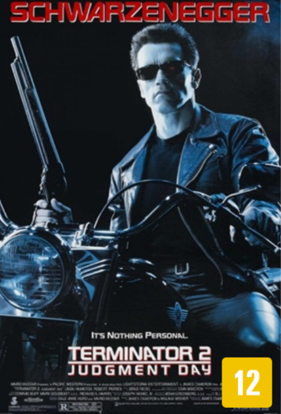

EXTERMINADOR DO FUTURO

-
Onde Assistir: Amazon Prime Video; Apple TV.
- "Exterminador do Futuro" é um filme de ficção científica dirigido por James Cameron, lançado em 1984. A história se passa em um futuro distópico, onde as máquinas, lideradas pela inteligência artificial Skynet, dominam o mundo e exterminam a humanidade. Para mudar o curso da história, Skynet envia um exterminador, um ciborgue implacável, de volta ao passado para assassinar Sarah Connor, a mãe do futuro líder da resistência humana, John Connor. Para proteger Sarah, a resistência envia Kyle Reese, um soldado que deve salvá-la e garantir que John nasça. O filme combina ação intensa com temas de destino e livre-arbítrio, enquanto Sarah e Kyle lutam pela sobrevivência contra o exterminador. Com suas inovações visuais e narrativa envolvente, "Exterminador do Futuro" se tornou um marco do cinema de ação e ficção científica.
-
Diretor: James Cameron
Produtora: Hemdale Film Corporation e Orion Pictures